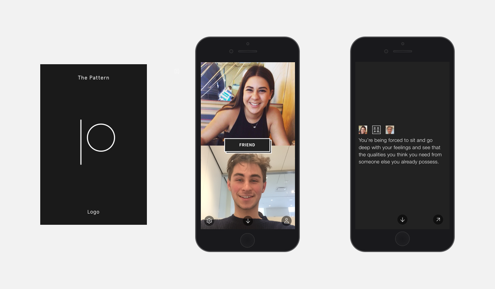
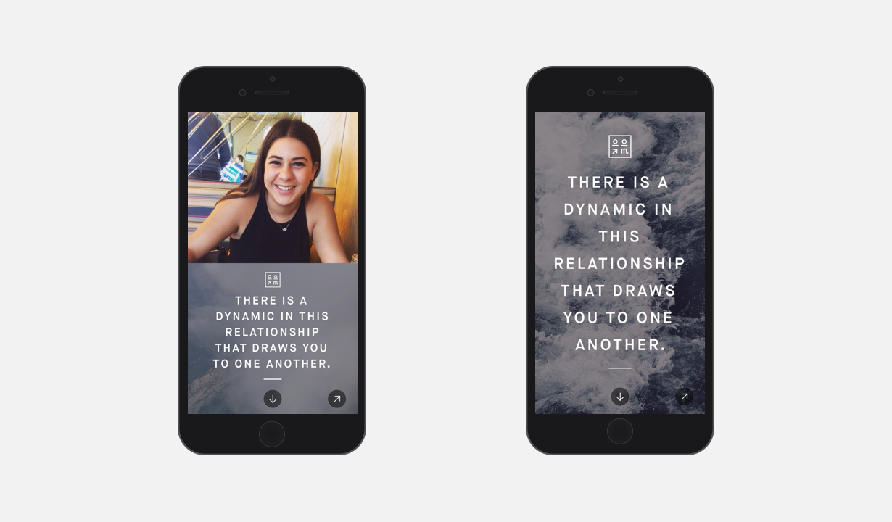
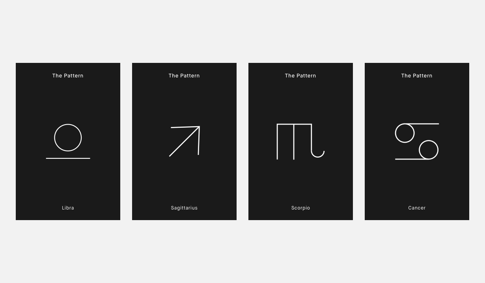
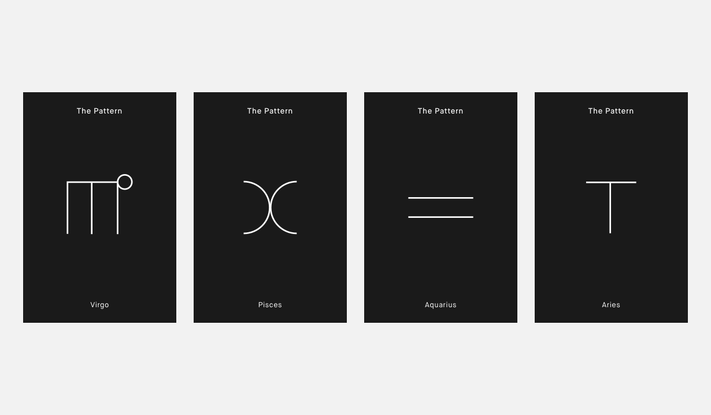
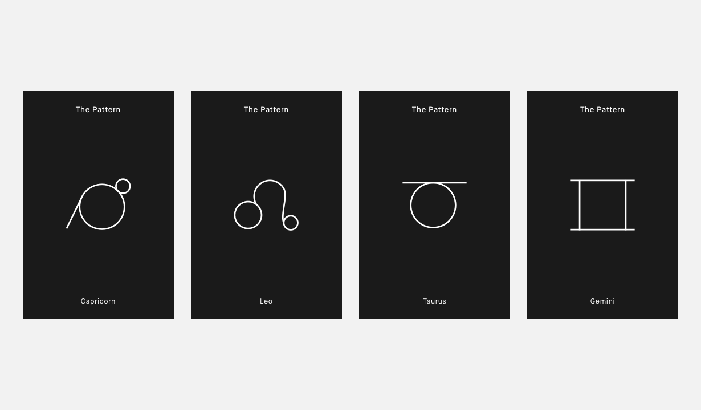

The Pattern
- User Research / Usability Testing
- Information Architecture / User Flows
- Wireframing / Prototyping
- Branding / Visual Design
Our client wanted Fuzz to design an app that used natal charts to help people learn more about themselves and connect with one another on a deeper, more emotional level. The challenge was to design a whole new way of interpreting and displaying natal charts and readings. Our main constraint was to develop a brand identity that would target millenials, without using any astrological themes.




